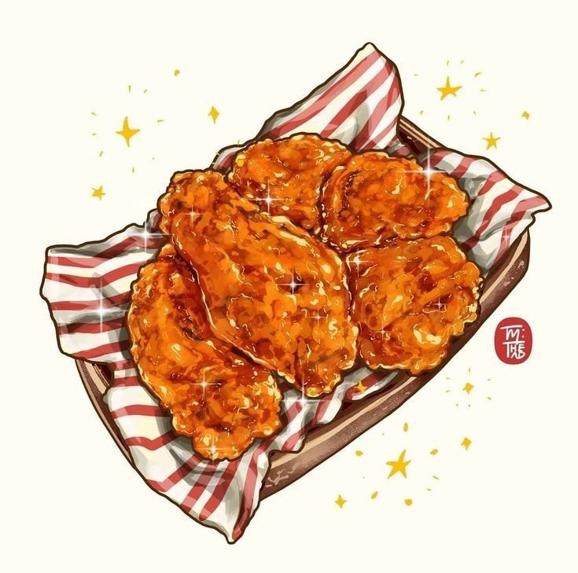
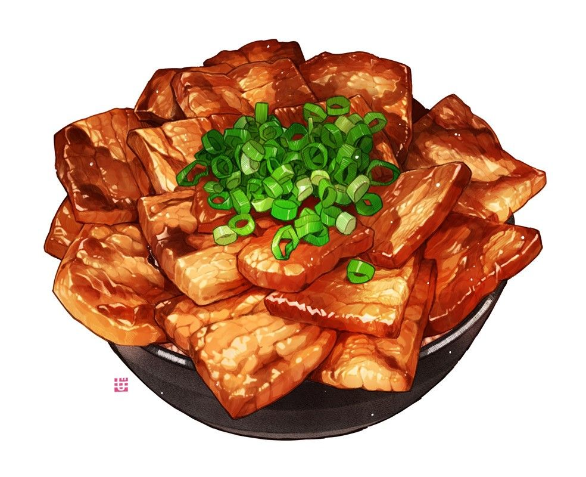
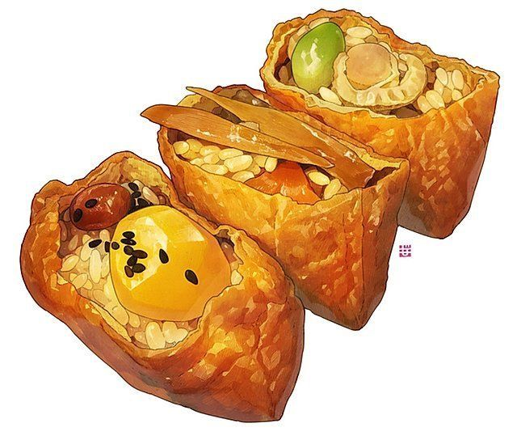
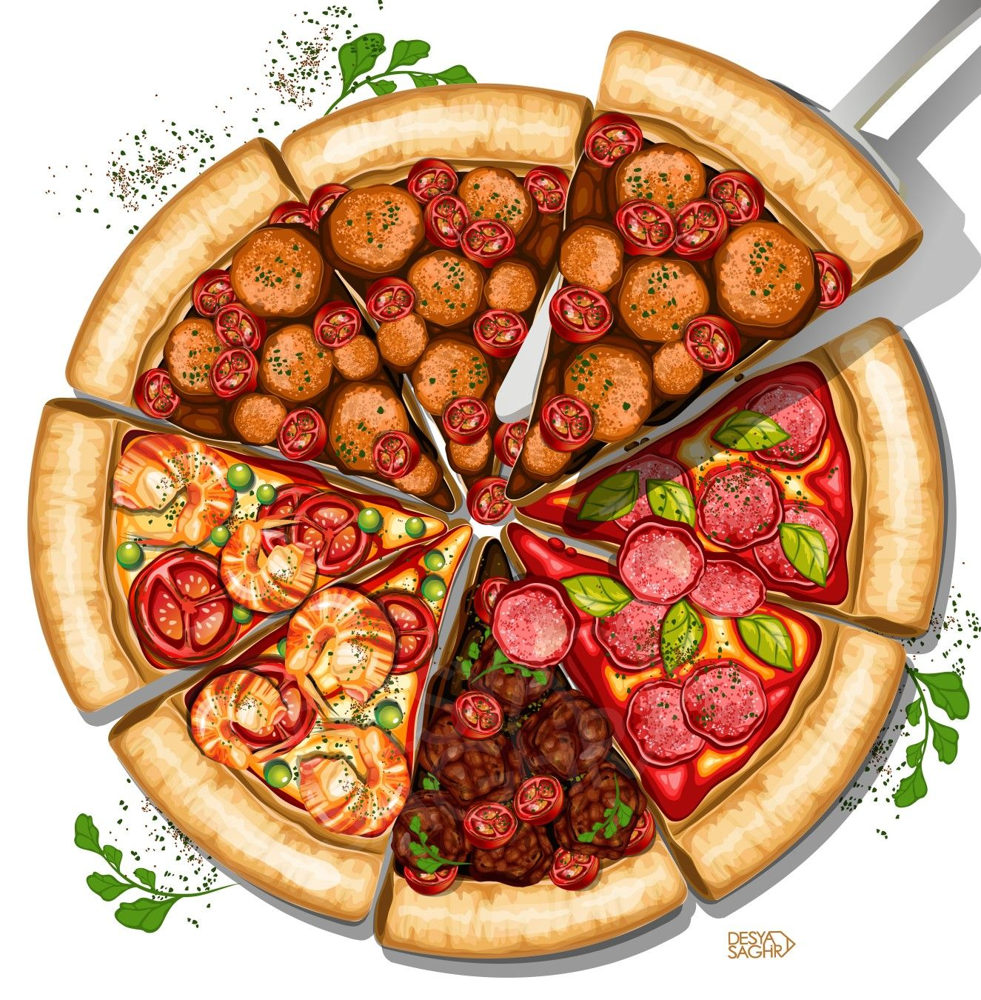
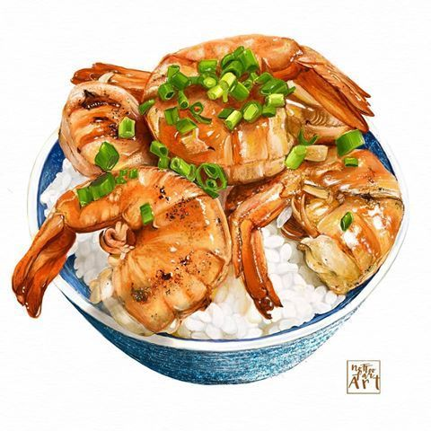
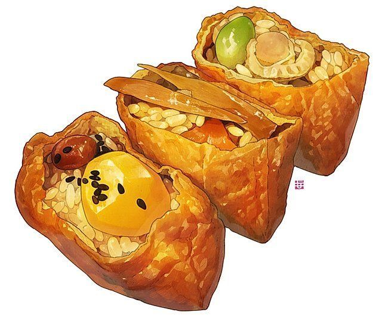
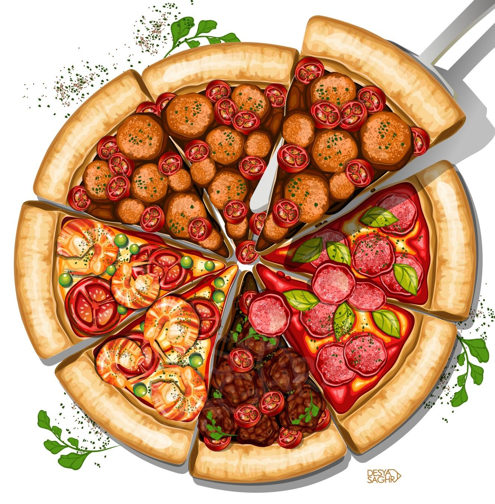
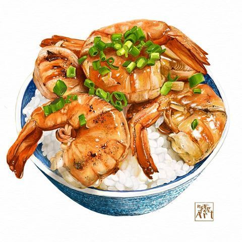
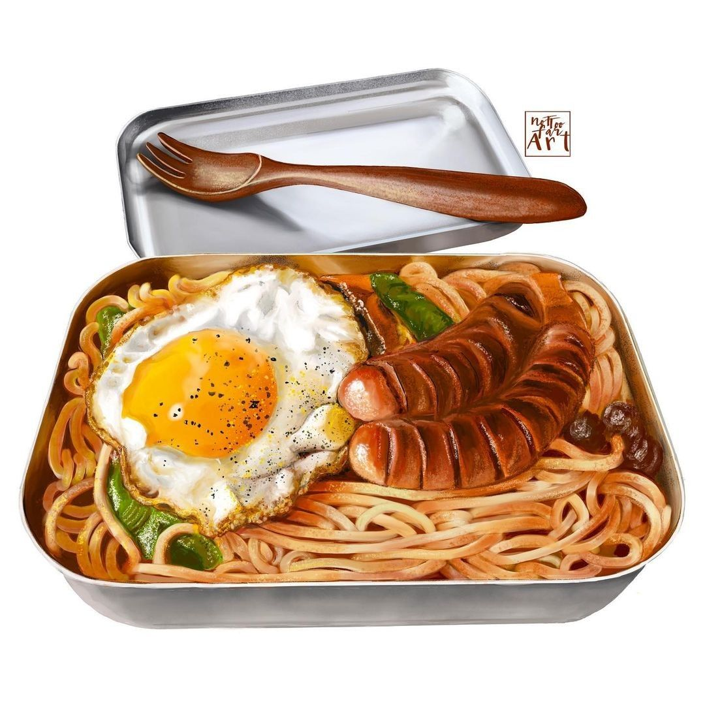
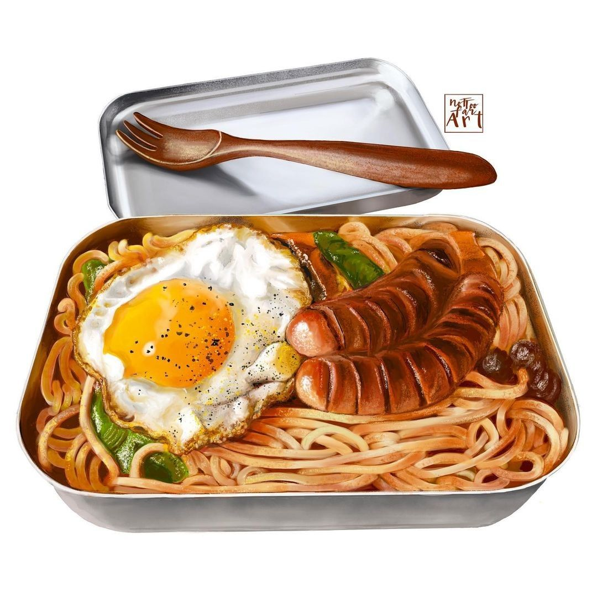

iBeta food and drinks are made with natural, homemade and organic
ingredients. Fresh from our in store garden and partnership with other
great farms in the country. Made daily with a touch of happiness. You
can enjoy a cup of tea or a huge cup of boba
****************************************************************************************************************************************************************************************************
We upload twice a week for your enjoyment.
  





 
Click this link to visit their YouTube channel

Click this link to visit their YouTube channel